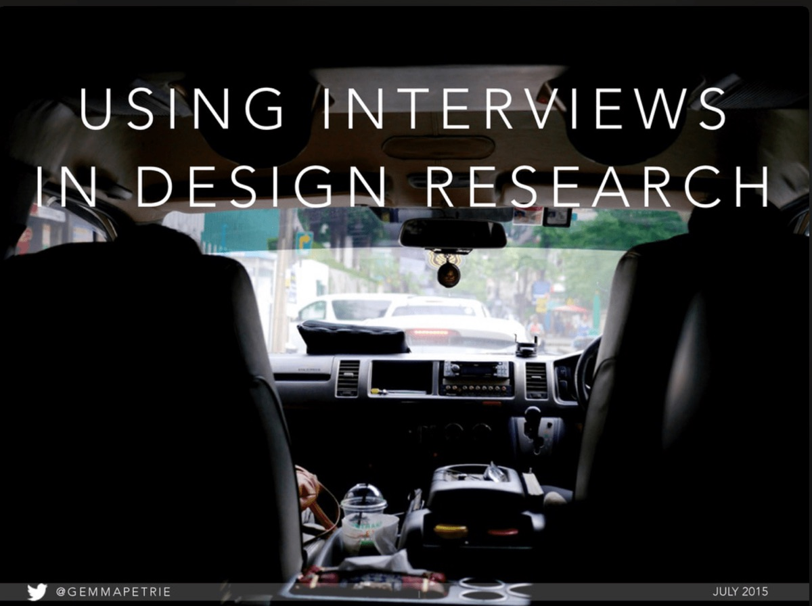

Workshop: Interviews in Design Research

I was recently invited to the UIC Daley Library to speak to an awesome group of librarians that are using UX methods to learn about and improve their institutions. The workshop focused on my work at Mozilla, how to plan a research study, and best practices for user interviews. Activities throughout the day gave all the attendees hands-on experience scoping, drafting, and running a user interview. You can see my slides below and learn more about the Chicago Library UX group on their meetup page.
Talk & workshop on using interviews as a UX research method. Versions of this talk have been given at the UIC Daley Library as part of the Chicago Library UX series (Jul 2015), the Mozilla All-Hands (Dec 2015), and LACONI Continuing Education at Skokie Library (Jan 2016).